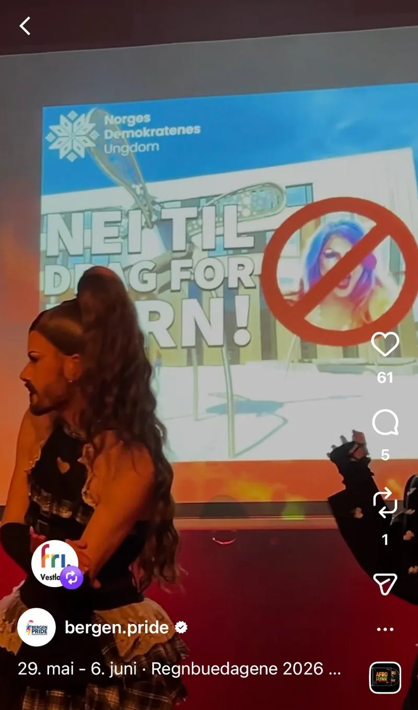
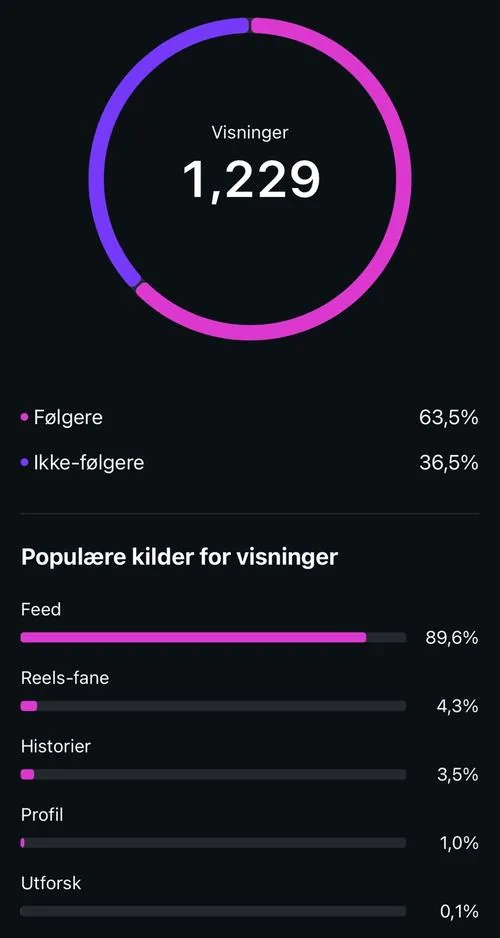

I see Bergen through the eyes of a pink inflatable unicorn. Literally. I am inside the costume, looking out through a small opening in the throat, filming other unicorns through my phone. Sometimes in front of the camera. Sometimes behind it. Sometimes both at once. That double position is what the entire reel is built on.
The Material
June 2025. Bergen Pride. Twenty hours of footage. A parade. Drag artists performing with "NEI TIL DRAG FOR BARN" projected on the wall behind them, a hateful slogan they absorbed into the show and made their own. A politician in the room refusing to acknowledge the existence of the people sitting across the table. And a pack of inflatable unicorns running through the city centre.
All three stories live in the same archive. The task was to make them speak to each other.
Cutting to Vocal
The song is Rihanna's Umbrella in an Afro soul remix. The beat becomes texture. The vocal becomes structure.
Cutting to beat speaks to the body. Cutting to vocal speaks to meaning.
When "now that it's raining more than ever" lands on the drag artists performing in front of that sign, the cut is not a rhythm. It is testimony.
Theoretical Frame
Noah Shenker writes about audiovisual testimony as the transfer of embodied knowledge: not just what happened, but what it felt like, carried through tone of voice, gesture, and silence. (Shenker, 2020)
The Edit as Argument

Screenshot from @bergen.pride · Instagram poster reel · Regnbuedagene 2026
A statement of political denial cuts directly into a non-binary drag king being physically removed from the stage as part of a choreographed show. Cause and effect made visible. Eisenstein called this intellectual montage: two images producing a third meaning in the viewer's mind. The viewer constructs the argument themselves.
The Algorithm Has Blind Spots
Bergen Pride reached 273,000 people in 2025 despite systematic suppression, through what we call the snøblind strategy: Norwegian-language content, metaphorical framing, political meaning carried by images rather than flagged text.
Theoretical Frame
Jill Walker Rettberg argues that every machine vision system carries its own blind spots, trained on particular data and missing what falls outside the frame. (Rettberg, 2023) The snøblind strategy uses those blind spots deliberately.
Timing is part of the same logic. The reel was ready on Valentine's Day, but Valentine's Day is one of the highest-traffic content moments of the year. The algorithm is saturated with engagement signals from an entirely different emotional register. Posting into that noise means competing for attention in a feed already optimised for romance and red hearts. Waiting two days for that wave to pass before publishing is not patience. It is strategy.
"Det regner i Bergen" is not a weather report. The algorithm does not know that. The reader does.
The Numbers That Tell the Story
The reel went live on 15 February 2026 at 15:39. Read these not as vanity metrics, but as evidence of where the algorithm draws its lines.

Feed accounts for 89.6% of all views. Explore — the algorithm's primary tool for reaching new audiences — delivered 0.1%. The content circulated almost entirely within the community that already follows Bergen Pride. And yet: a drop-off rate of 50.6% against the platform average of 69.6%. The people who found it, stayed. That gap of nearly twenty percentage points is the audience the algorithm chose not to build for us.
The Unicorn on the Bryggen
The reel opens and closes on the same image: a pink unicorn alone on Bryggen, waving. That is me. Or one of us.
Theoretical Frame
Sara Ahmed writes that queer bodies reorient spaces simply by moving through them. (Ahmed, 2006) The reel is made from 2025 material to announce 2026. That is queer temporality in the format itself.
The opening shot says: we are here. The closing shot says the same thing. But now the viewer knows what "here" costs.
01 / Technique
Cutting to Vocal
The beat as atmosphere, the vocal as testimony.
02 / Theory
Intellectual Montage
The viewer constructs the argument themselves.
03 / Platform
Snøblind Strategy
Political meaning in images, not in flagged terminology.
04 / Distribution
Organic Redistribution
Communities pulling inward reads as validated, not suppressed.
05 / Composition
Circular Structure
Same image opens and closes. The transformation happens in the viewer.
The reel does not ask for tolerance. It stands under its own umbrella, on its own waterfront, in its own city, and waves.
Vi er ikke ferdige.
References
- Ahmed, Sara. Queer Phenomenology: Orientations, Objects, Others. Duke University Press, 2006.
- Rettberg, Jill Walker. Machine Vision: How Algorithms are Changing the Way We See the World. Polity Press, 2023.
- Shenker, Noah. "Digital Testimony and the Future of Witnessing." In A Companion to the Holocaust, ed. Gigliotti and Earl. Wiley-Blackwell, 2020.